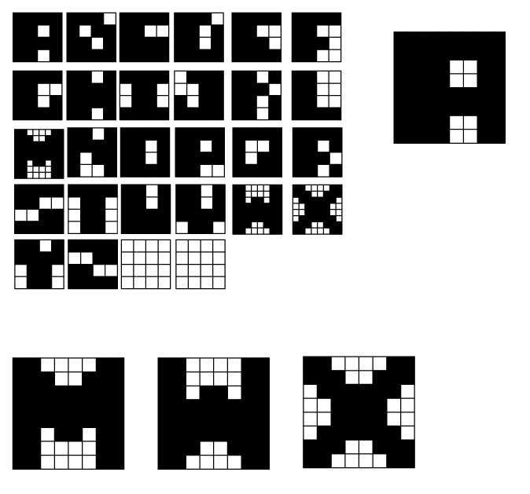
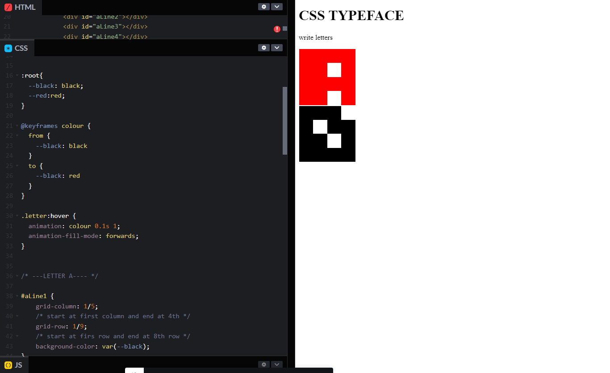

Typography Design Process
For my typography typeface, I tried to make letters used large grids like 16x16. But things just turned out complicated and I was'nt able to come up with any good designs. So then I thought what if I was to make the most simplest typography design. So I started towork with a 4x4 grid and designed all 26 characters of the alphabet. Below you can see that M, W, and X have a red space there, it's because I couldnt fine an eligible way topu tit ina 4x4 grid. So I decided to design only those three letters in an 8x8 grid since it would still fit the overall theme of the typeface, and i could draw the rest of teh letters in the 8x8 grid without any changes.

and below is the final letter designs implementing the 8x8 grid for M, W, and X. I also included a sketch of the letter A in an 8x8 grid to see how it would turn out. I also redesigned the letter Y.
Coding The Typeface
I decided that rather than using the template that was provided to draw out letters in, I made one myself. It's also responsive to window resizing. Im quite happy with out it turned out. Drawing the typography in CSS was pretty easy. I decided to use the grid template method we learned from that carrot planting grid game. After drawing out a few letters, I started to get tired from going back to refresh the page since it was taking so long. I then started to use CodePen and colored the box I was moving blue so I can see it easily. This process was much faster.
Then with the typeface done, I thougth about what I can do to make the letters interactive. Because of the way I drew the letters, I didnt think itd be good to make each bar change colour when hovered over. then I remembered CSS variables and experimented with it in CodePen. Im glad to say that it works and it makes the typface very interesting. Ill definitely be using this in other projects.
In the final typeface, I made the variable :root {--letterColour: black;} to make things easier